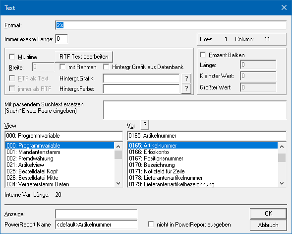
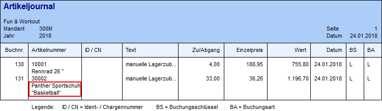
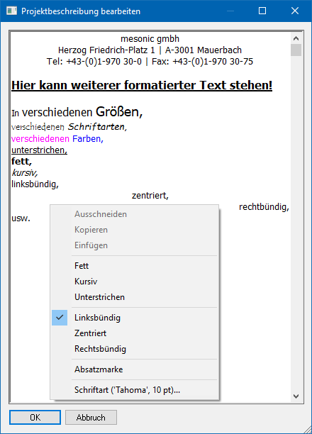
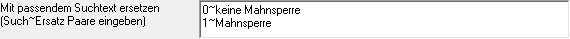
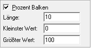
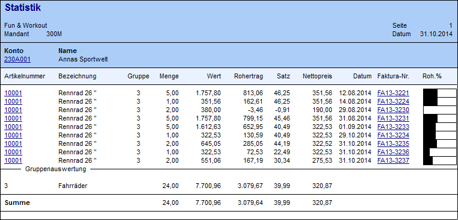

Ø Text Variable
Text Variablen ermöglichen den Andruck von allen Variablen, in denen ein Text (z.B. Adressinformationen) gespeichert sind. Textvariablen werden ohne Zahlen-Formatierung ausgegeben, sodass sich dieser Variablentyp nicht für den Andruck von Zahlen eignet.
Zusätzlich können mit diesem Element auch fixe Texte mit RTF-Formatierung am Formular hinterlegt werden OHNE auf den Inhalt einer Variable zuzugreifen.
Eigenschaftsfenster "Text"
Über das Eigenschaftsfenster "Text" können unterschiedlichste Einstellungen für eine Text Variable vorgenommen werden.

Ø Format
Bestimmt das Darstellungsformat der Variable im Ausdruck. Dabei gibt es unterschiedliche Varianten:
ü %s
Mit diesem Format (Standard)
wird die Variable in der Länge angedruckt, wie sie auch in der Datenbank
gespeichert ist.
ü \ \
Mit
diesem Format wird ein Text auf eine gewisse Anzahl von Zeichen beschränkt
werden. Dabei wird zu Beginn des Format-String ein Backslash eingegeben, dann
folgt eine gewisse Anzahl von Leerzeichen, danach wieder ein Backslash. Dabei
ist zu beachten, dass die Backslashs mitgezählt werden.
Beispiel
Ein Text soll genau mit 10 Zeichen angedruckt werden. Daher muss im Format String ein Backslash, dann 8 Leerzeichen und dann wieder ein Backslash eingegeben werden.
Hinweis
Mit Hilfe der Option "Immer exakte Länge" wird das Format automatisch erzeugt.
ü %s {W:15}
Mit diesem Format
wird die Variable mit einer maximalen Länge (hier "15") ausgedruckt bzw.
dargestellt. Wenn es bei der Ausgabe zu einer Beschränkung kommt, dann wird
hierauf durch drei Punkte am Ende des gedruckten Bereichs aufmerksam
gemacht.
Beispiel

Hinweis
Mit Hilfe der rechten Maustaste auf eine Text Variable (Option "Länge beschränken") wird das Format automatisch erzeugt.
ü %, 20
Bei diesem Format wird
die Variable nach einer Anzahl von Zeichen (hier "20") umgebrochen.
Beispiel

Achtung
Das Format muss mit Hilfe der Option "Multiline" erzeugt werden!
ü Nummer %s
Bei diesem Format
wird vor die Variable eine fester Text (hier "Nummer") geschrieben. Natürlich
kann solch ein Text auch hinter oder vor und hinter die Variable "%s" gesetzt
werden.
Hinweis
Auch wenn die Variable keinen Wert zurückliefert und somit nichts gedruckt / angezeigt werden müsste, so wird der statische Text trotzdem ausgegeben.
ü L0.000000H100.000000W11V1
Bei
diesem Format wird der Inhalt der Variable in einen Prozent Balken
umgerechnet.
Achtung
Das Format muss mit Hilfe der Option "Prozent Balken" erzeugt werden!
Ø Immer exakte Länge
Mit dieser Option wird ein Text auf eine gewisse Anzahl von Zeichen beschränkt. D.h. sobald die Anzahl der Zeichen überschritten wird erfolgt keine weitere Ausgabe des Textes. Die Eingabe der Zahl "0" entfernt die Beschränkung.
Ø Multiline
Die Aktivierung dieser Option ermöglicht die Ausgabe einer Variable über mehrere Zeilen (mit Zeilenumbruch).
Hinweis
Wenn RTF-Felder (Ritch-Text-Format-Felder, z.B. Notizblöcke im Personenkonten- oder Artikelstamm) verwendet werden, muss diese Option gesetzt werden, damit der Text nicht mit Sonderzeichen ausgegeben wird.
Ø RTF Text bearbeiten
Wenn die Option "Multiline" aktiviert wurde, kann mit Hilfe dieses Buttons ein neues Fenster zur Eingabe eines RTF-Textes geöffnet werden. Dieser Text wird direkt am Formular hinterlegt, OHNE auf den Inhalt einer Variable zuzugreifen. Die Formatierung des Textes erfolgt über die rechte Maustaste, wo alle Optionen vorhanden sind.
Hinweis
Damit der erfasste RTF-Text ausgegeben wird muss die View auf "000" und die Variable auf "0000" gestellt werden.
Im RTF-Text können auch Variablen eingebaut werden, die dann beim Ausdruck ersetzt werden - es kann auf alle Variablen zugegriffen werden, die im Formular zur Verfügung stehen. Dabei muss die Syntax <VAR:X/Y,Format> (X steht für View, Y steht für Variable, Format gibt die Formatanweisung an, wobei das z.B. %s für eine Textvariable oder ###,###.## für eine numerische Variable sein kann) verwendet werden.

Ø Breite
Im Zusammenhang mit den Multiline-Feldern kann hier die Anzahl der Zeichen angegeben werden, nach denen ein Zeilenumbruch durchgeführt werden soll.
Ø RTF als Text
Mit dieser Option wird gesteuert, dass RTF-Texte als "normaler" Text ausgedruckt wird. Hierdurch gehen alle Formatierungsinformationen (Schriftarten, und -größen, Hervorhebungen), welche in WinLine für den RTF-Text definiert wurden, für die Ausgabe verloren.
Ø immer als RTF
Ist diese Option aktiviert, dann wird der angedruckte Text immer in einen RTF-Text konvertiert. Diese Funktion z.B. dann zum Tragen, wenn nicht alle Notiztexte mit einer aktuellen Version erfasst wurden.
Hinweis
Die Funktion der RTF-Felder wurde erst mit der Version 7.1 eingeführt. Wurden nun Notizen in einer Version VOR 7.1 erfasst, so sind diese noch als normaler Text gespeichert. Damit nun beide Textarten das gleiche aussehen haben, müssen die "normalen" Texte in RTF konvertiert werden.
Ø mit Rahmen
Durch Aktivieren dieser Checkbox wird der Multiline-Text mit einem Rahmen eingefasst. Grundvoraussetzung hierfür ist, dass es sich bei der auszugebenden Variable um einen RTF-Text handelt oder dass die Option "immer als RTF" aktiviert wurde.
Ø Hintergr. Grafik aus Datenbank
Durch Aktivierung dieser Checkbox werden im Matchcode des Felds "Hintergr. Grafik" die Grafiken angezeigt, welche sich in der WinLine Systemdatenbank befinden.
Ø Hintergr. Grafik
Für Multiline-Felder kann hier ein Hintergrundbild festgelegt werden. Über den Matchcode kann nach Bildern in der Windows-Umgebung oder in der WinLine Systemdatenbank (siehe Option "Hintergr. Grafik aus Datenbank").
Grundvoraussetzung für eine Hintergrundgrafik ist, dass es sich bei der auszugebenden Variable um einen RTF-Text handelt oder dass die Option "immer als RTF" aktiviert wurde.
Ø Hintergr. Farbe
Für Multiline-Felder kann hier eine Hintergrundfarbe definiert werden. Die Farbauswahl erfolgt hierbei über den Matchcode.
Grundvoraussetzung für eine Hintergrundfarbe ist, dass es sich bei der auszugebenden Variable um einen RTF-Text handelt oder dass die Option "immer als RTF" aktiviert wurde.
Ø Mit passendem Suchtext ersetzen
Mit dieser Option kann eine Ersetzung durchgeführt werden. In der Datenbank sind einige Felder enthalten, die "Optionen" entsprechen. Beispiel dafür wäre die Mahnsperre, welche im Programm eine Checkbox ist, in der Datenbank aber als 0 oder 1 gespeichert wird. 0 oder 1 ist auf einem Formular nicht sehr aussagekräftig - daher kann für dieses Feld eine Ersetzung hinterlegt werden (wenn in der Datenbank 1 steht, soll am Formular "Mahnsperre" angedruckt werden).
Beispiel
Statt dem Mahnkennzeichen 0 oder 1 soll "keine Mahnsperre" oder "Mahnsperre" angedruckt werden. Die Eingabe lautet hierfür wie folgt:
ü 0~keine Mahnsperre
ü 1~Mahnsperre
Hinweis
Das ~-Zeichen wird durch die Tastenkombination ALT GR + erzeugt.

Ø Prozent Balken
Wenn der Wert graphisch als Prozentbalken dargestellt werden soll, kann die Option "Prozent Balken" aktiviert werden. Hier besteht die Möglichkeit die Formatierung des Balkens durch folgende Werte zu steuern:

ü Länge
Legt die absolute Länge
des Balkens fest
ü Kleinster Wert
Legt den
Minimalwert fest
ü Größter Wert
Legt den
Maximalwert fest
Als Ergebnis wird ein Prozentbalken dargestellt, welcher die ausgewählte Variable grafisch darstellt. Überschreitet der dargestellte Wert den in "Größter Wert" angegebenen Wert, werden immer 100 % dargestellt.
Beispiel

Ø View / Var
Über die Auswahllisten kann die View (d.h. die SQL-Tabelle)
und die Variable (d.h. die SQL-Spalte in einer Tabelle) bestimmt werden, welche
ausgegeben werden soll. Mit Hilfe des Icons  kann das Fenster "Variable suchen"
geöffnet werden. In diesem ist es möglich per Volltextsuche nach Variablen zu
suchen.
kann das Fenster "Variable suchen"
geöffnet werden. In diesem ist es möglich per Volltextsuche nach Variablen zu
suchen.
Hinweis
Weitere Information entnehmen Sie bitte dem Kapitel Einfügen von Variablen.
Ø Anzeige
Im Eingabefeld "Anzeige" können Informationen im Klartext hinterlegen werden um das Formular besser lesbar zu machen. Statt der Variablen wird der hier eingetragene Text auf dem Bildschirm angezeigt. Der Eintrag hat aber keinerlei Auswirkungen auf den Andruck der Variablen und wird nach dem Schließen des WinLine Formular Editors gelöscht (ist beim nächsten Aufruf nicht mehr sichtbar).
Ø PowerReport Name
An dieser Stelle kann der Name für die Anzeige innerhalb des Power Reports angepasst werden. Im Standard wird der Name der Variable übergeben.
Ø nicht in PowerReport ausgegeben
Mit Hilfe dieser Checkbox definiert werden, ob die Daten der Variable im Power Report zur Verfügung stehen sollen oder nicht.
Hinweis
Grundsätzlich werden nur Variablen aus dem Mittelteilsbereich an den Power Report übergeben.